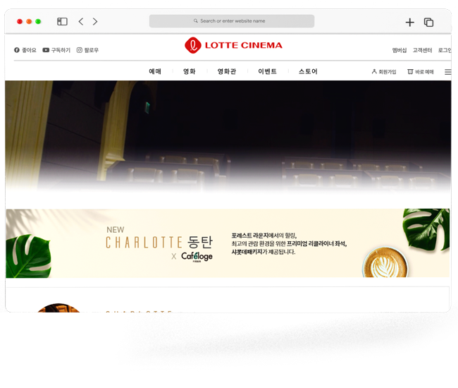
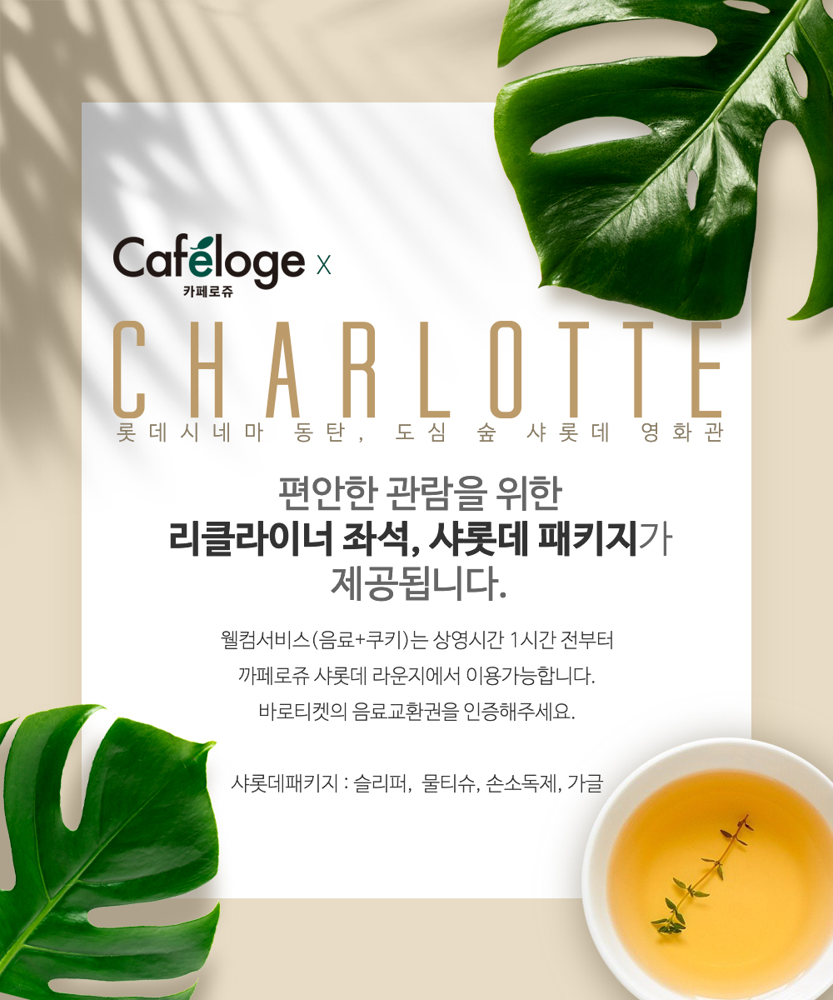
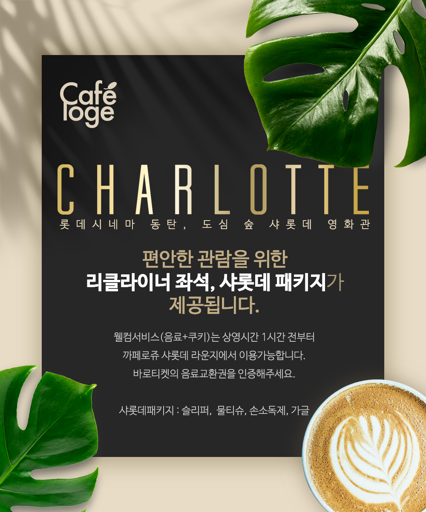

롯데시네마 바로가기

 프리미엄 상영관 샤롯데 안내 배너
2D Grapic Design
프리미엄 상영관 샤롯데 안내 배너
2D Grapic Design
Overview
대형 멀티플렉스 영화관 롯데시네마의 프리미엄 상영관 <샤롯데> 안내 배너입니다.
2021년 8월 롯데시네마 동탄 신규 오픈 시 의뢰받아 진행한 시안입니다.
샤롯데의 고급스러움을 상징하는 기존 BI 색상 BLACK & GOLD와
신규 동탄 지점의 컨셉인 자연주의를 반영한 색상으로 2가지 시안을 작업하여 제안하였습니다.
현재 롯데시네마 홈페이지 및 어플리케이션에서 Variation하여 실 사용 중입니다.
-
- 작업 기여도
- 개인작업 100%
-
- 작업 프로그램

-
- 클라이언트
- 롯데시네마
Analysis
샤롯데 라운지의 컨시어지 서비스가 카페로쥬 테넌트 매장과 첫 콜라보를 하며 이미지 변화가 필요했습니다.
카페로쥬가 가진 도심 속의 숲, 건강 음료 등 자연주의 컨셉을 나타내기 위하여, 몬스테라 잎, 빛, 그림자를 주 오브젝트로 배치하였습니다.
그리고 프리미엄 상영관이지만 COVID-19에 따른 영화관 관람객 감소 현상에 따라 홈씨어터와 같은 친근한 분위기가 필요하다고 판단되어
주 색상 중 하나인 블랙을 화이트로 교체하였습니다.
Color
- White & Gold
- #E8DCC6
- #BB9B6A
- #FFFFFF
- #004900
- #002800
- Black & Gold
- #272727
- #E8DCC6
- #BB9B6A
- #FFFFFF
- #002800
Work Process
샤롯데 X 카페로쥬 라운지에서 웰컴드링크와 함께 안내를 받는다는 스토리로 오브젝트를 배치하여 디자인하였습니다.
또한 전체적으로 나뭇잎 그림자를 레이어링하여 이미지의 자연스러움을 높였습니다.
또한 전체적으로 나뭇잎 그림자를 레이어링하여 이미지의 자연스러움을 높였습니다.
Output
- 
- 